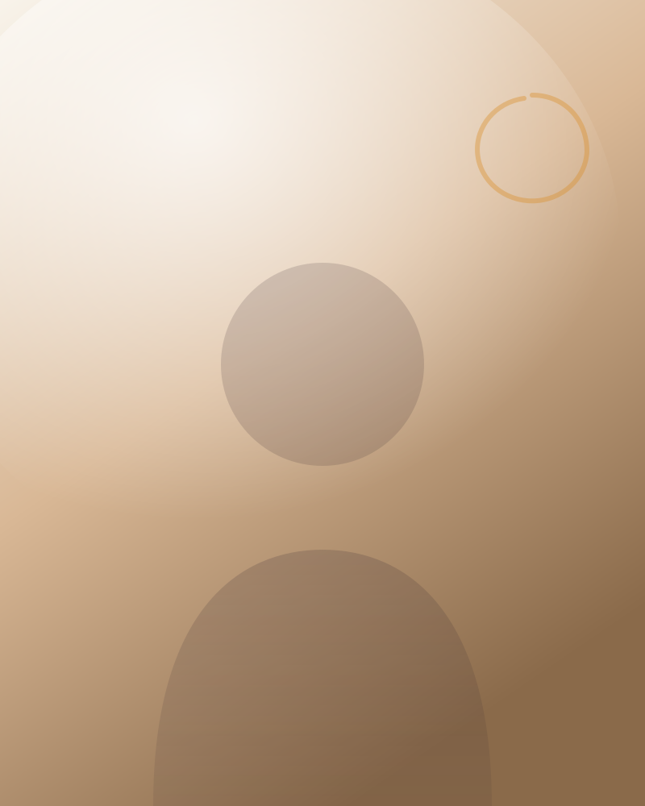

With over 30 years of experience, I am a dedicated therapist specialising in holistic healing approaches that nurture both the body and mind. My practice integrates a rich blend of traditional and contemporary therapies including Shiatsu, cupping, dry needling, moxibustion and exercise therapy.
I am passionate about energy medicine and the profound ways it supports the body's natural healing processes. Through gentle, targeted techniques, I aim to restore balance, relieve pain and enhance overall wellbeing.
Health is deeply connected to lifestyle.
Understanding that health is deeply connected to lifestyle, I also incorporate food as medicine principles into my work. By recognising the healing power of nutrition, I help clients make choices that support their bodies from the inside out.
My approach is tailored to meet individual needs, combining hands-on therapies with guidance on lifestyle and nutrition. Whether you are seeking relief from physical discomfort, emotional stress, or want to optimise your health, I am here to support you.